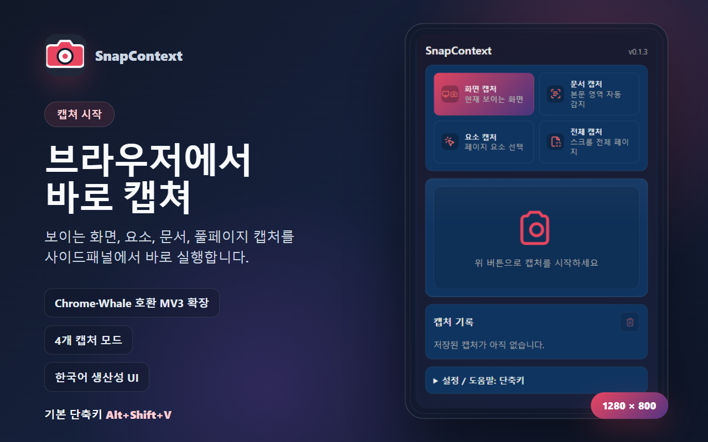
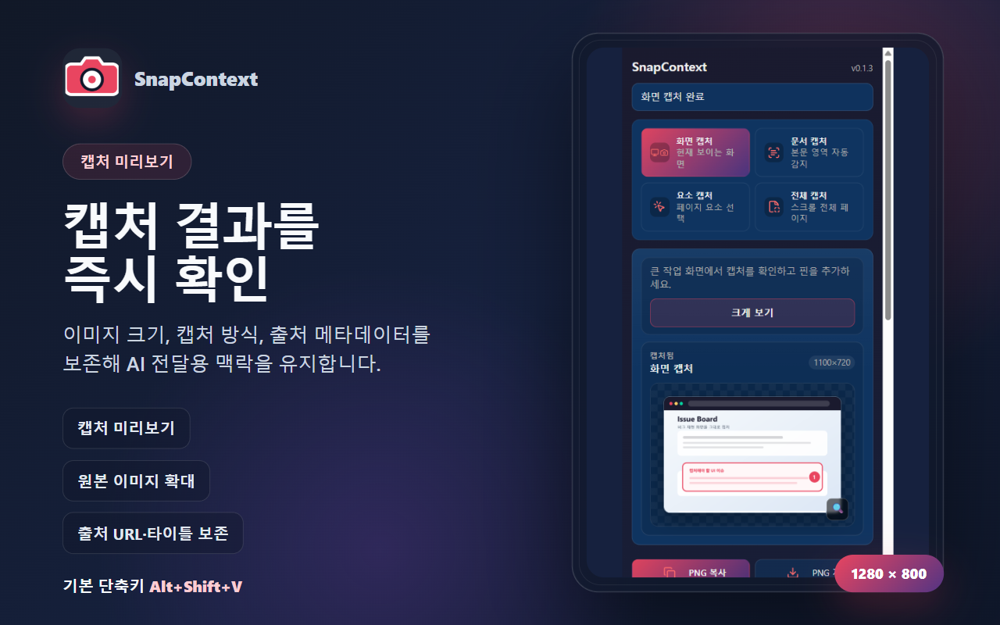
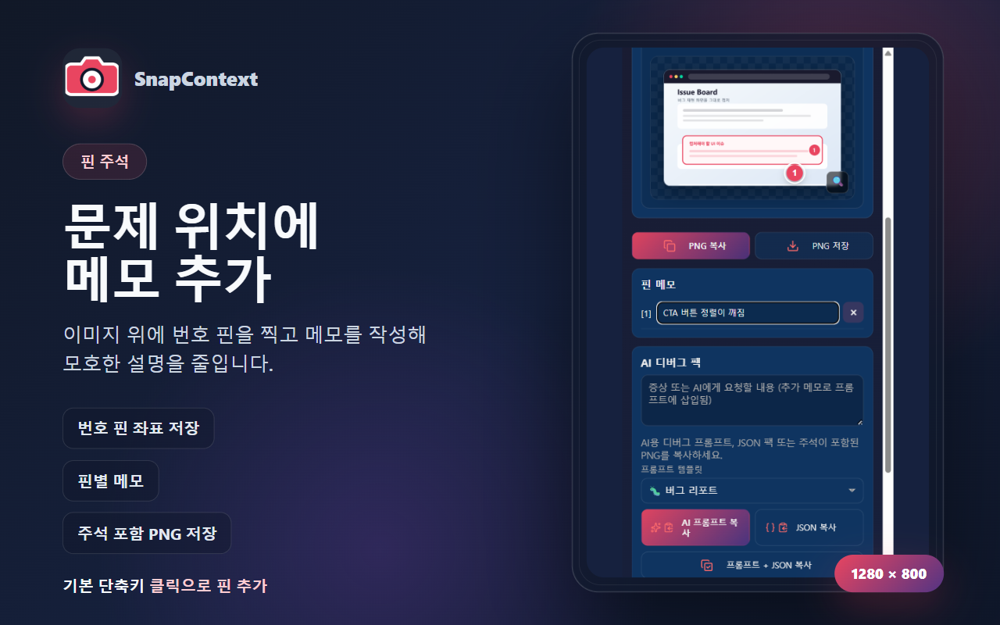
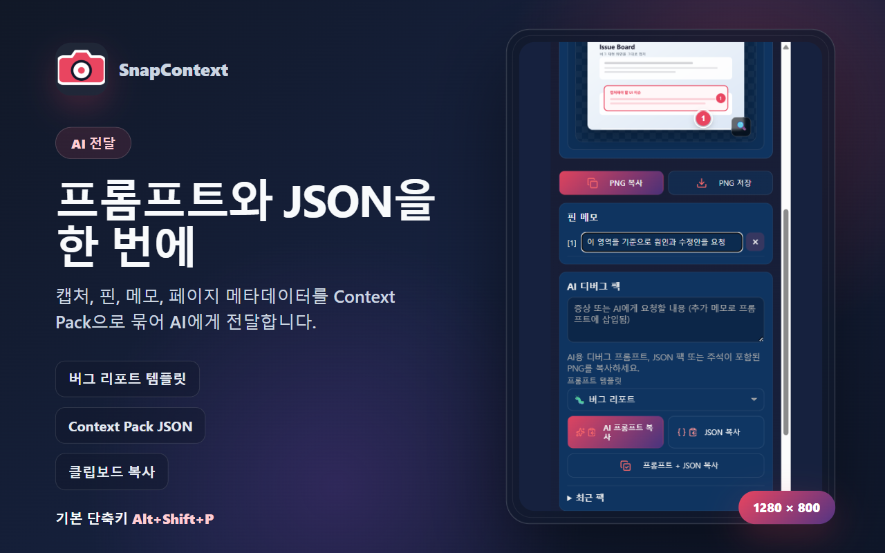
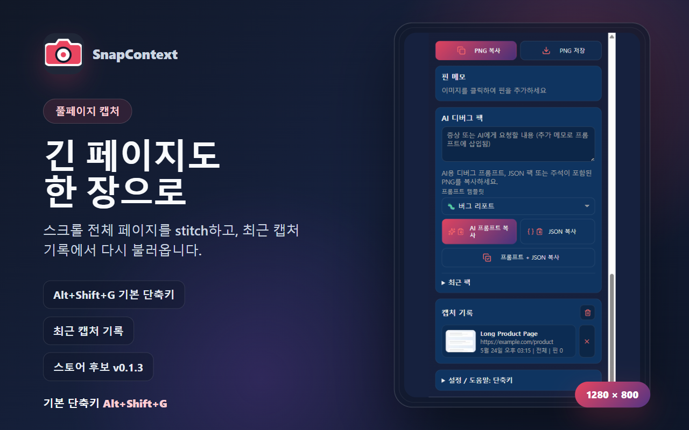

핵심 기능 완성
4종 캡처, 핀·메모, Context Pack, 풀페이지 stitch, 캡처 기록. 단축키 SoT를 Alt+Shift+G로 확정.
Yohan Studio · Case Study
Chrome·Whale MV3 확장 — 화면 캡처, 핀 주석, AI용 Context Pack. v0.1.3 Store Candidate부터 GitHub 공개, 실전 검증, 양 스토어 제출까지의 과정을 기록합니다.
| 채널 | 상태 | 비고 |
|---|---|---|
| GitHub | 공개 | 소스·Privacy·스크린샷 |
| Chrome Web Store | 검토 대기 | 비판매자 · <all_urls> |
| Whale Store | 리뷰 요청 | 한국어 listing · Yohan Studio |
4종 캡처, 핀·메모, Context Pack, 풀페이지 stitch, 캡처 기록. 단축키 SoT를 Alt+Shift+G로 확정.
package / manifest / UI 버전 통일. PRD·changelog·에이전트 문서 동기화.
npm test 7/7 · test:e2e:all 43/43 · Chrome/Whale 수동 캡처·단축키 확인.
Playwright로 실제 패널 UI 캡처 + 1280×800 마케팅 프레임 5장 생성 (store:screenshots).
공개 repo · PRIVACY URL · Notion 토큰 제외(히스토리 정리).
CWS Privacy practices·비판매자. Whale 한국어 listing·리뷰 요청.
개발 완료 → npm run build (dist/) → npm test + test:e2e:all → store:screenshots (1280×800 × 5) → dist/* → snapcontext-v0.1.3.zip → Chrome Web Store (EN listing + Privacy) → Whale Store (KO listing) → 심사 대기
실제 사이드패널 UI + 마케팅 카피 합성. 경로: docs/store/chrome-web-store/screenshots/




